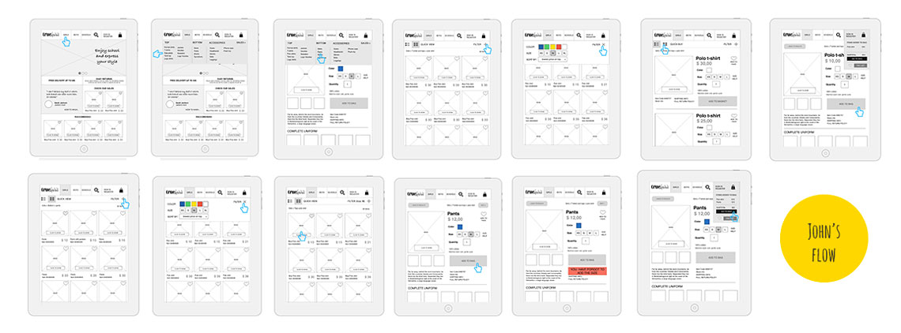

TOPICS: Needfinding, Scenarios, Rapid Prototyping (POP)
Quiz someone about their interests, and find a problem that could be solved with the design of a simple mobile app. Working with your partner, you’ll design apps for each other which solve the problem simply and effectively.
Student project for User Experience Design Immersive, General Assembly, Summer Sydney 2014
1 weeks
POP App, pencils and paper.
James enjoys cooking and he wish he was a better cook but he hasn’t too much time to invest in it. He likes to go to the market, to make up recipes and to look for recipes online but he usually cooks the same 5 basic recipes. When he cooks, he has the habit to modify recipes on the fly without keeping track of changes. This makes really hard to reproduce the same recipes after a while.
In the quick couple of days we had to research, test and draft prototypes - I resulted with an app that is premised on making James a better cook, helping him to remember successful alterations to recipes, building his own recipes collection and giving him inspiration, in order to be able to reproduce successfully the recipes he likes and to add more variety to his repertoire.
The first step of the porject was about focusing on the problems. Needfining included: get ready for the interview, conducting the interview, recording and taking notes, go throught all the materials all over again.
Setting out ideas on paper, keeping the funnel wide trying to condece the best from the competitor and design inspiration.
Scenarios helped to understand better the user flows and the flows an the features.
Personas were given as part of the assignment. Our role was to keep them in mind, understand what they need, building out personas as much as possible
Goals & Features:
Goals & Features:
This map helps to understand how to navigate the website and where there are shortcuts to reach one or more pages.
The prototype has been tested on 3 people thorough a Gorilla testing.
Pain points:
I have realized a mock-up of the visual design in order to understand if the home page was meeting the business style.
Business style requirements: Fresh, modern, lighthearted, open, appealing, friendly, curated, there when you need us but not in your way.
In order to communicate our design effectively we have played a role game. Where one us was playing the role of one of our persona using a prototype. We also had an external narrator to explain our design choices based on the action of our persona.